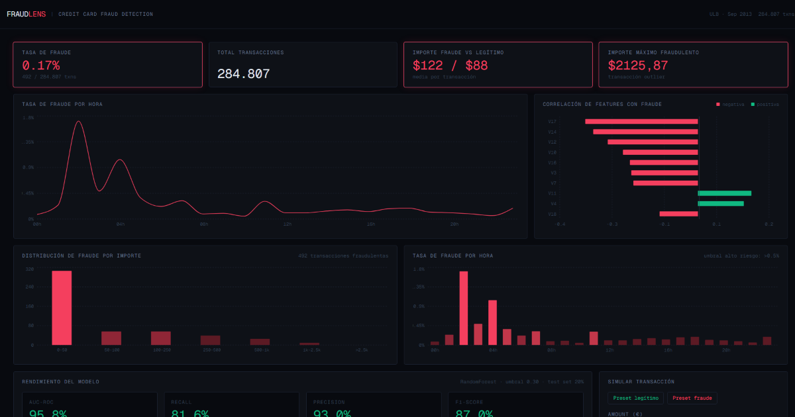
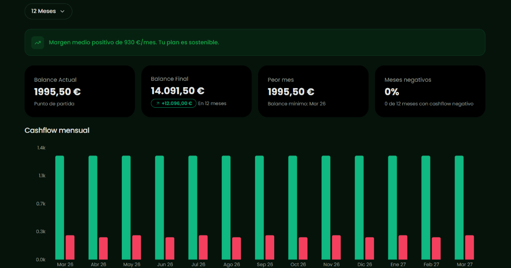

Desarrollador frontend especializado en React y TypeScript, con foco en arquitecturas escalables. En transición activa hacia AI Engineering.

Dashboard interactivo full-stack para análisis y detección de fraude en transacciones de tarjeta de crédito reales. Construido como proyecto de portfolio para demostrar el ciclo completo de un AI Engineer: datos reales → análisis → modelo ML → API → UI.

Enfoque en sistemas escalables, tipado estricto y lógica desacoplada de la UI.
Creación, entrenamiento e integración de modelos predictivos y lógica de datos en aplicaciones funcionales.
Experiencia en entornos de producción de agencia, garantizando entregas eficientes y autonomía del cliente.
Construyo sistemas mantenibles, no solo interfaces. Mi enfoque principal es React y TypeScript, pero donde busco aportar valor es en la arquitectura, cómo se organiza el código, cómo escala, cómo se mantiene.
Un ejemeplo es Forecash, donde implementé un monorepo con el dominio totalmente desacoplado del frontend.
Actualmente, estoy expandiendo mi stack hacia el AI Engineering: integración de LLMs, lógica de orquestación, productos inteligentes que resuelvan problemas reales de forma eficiente.
Busco una oportunidad para aportar valor y seguir creciendo profesionalmente. Si buscas a alguien comprometido para fortalecer tu equipo o proyecto, hablemos.